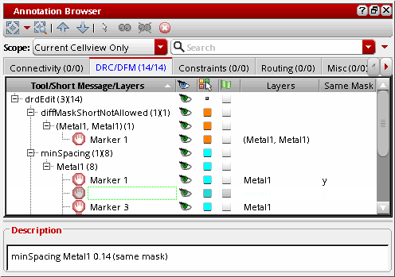
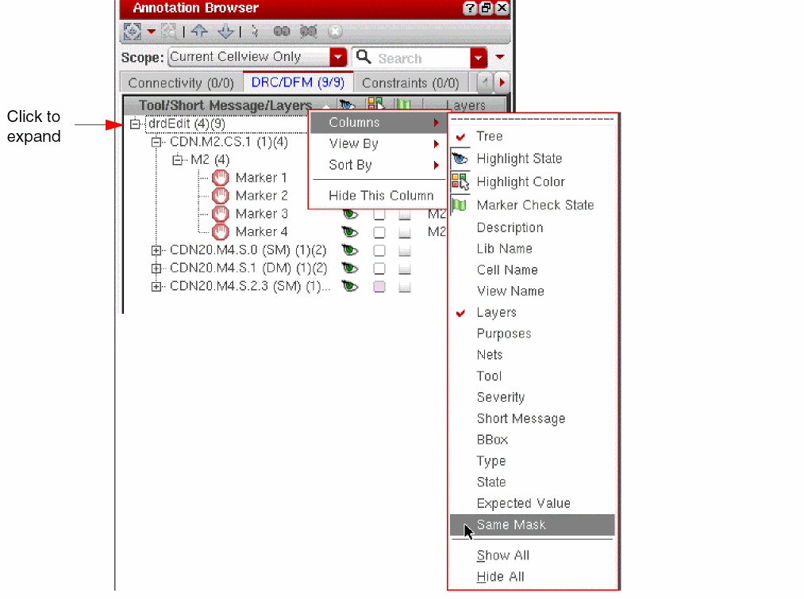
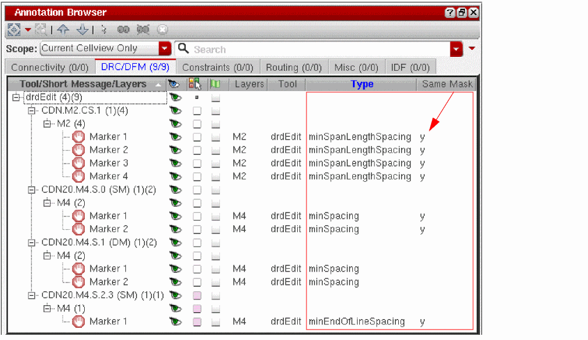
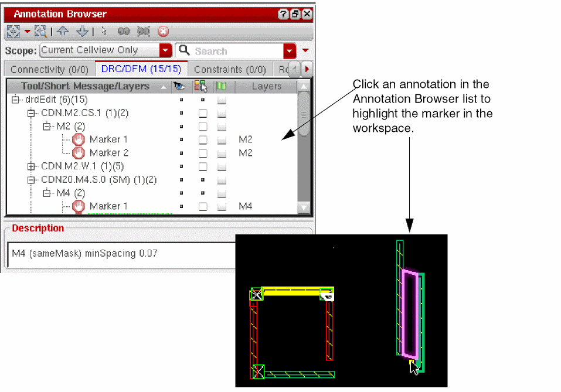

Using the Annotation Browser to View Multiple Patterning Violations
Use the Annotation Browser for more information on multiple patterning violations found by DRD or Pegasus Interactive.
To open the Annotation Browser,
-
Choose Window – Assistants – Annotation Browser.
You can undock the Annotation Browser and locate it elsewhere on your desktop for better viewing.
 -
Choose the DRC/DFM tab.
Annotations are grouped by tool and type: -
(optional) Customize the Browser Pane as described in Annotation Browser in the Virtuoso Layout Suite XL Reference Guide.
For drdEdit spacing violations, the Same Mask column will identify whether the constraint represents a same-mask spacing violation.
 -
Click an annotation in the Annotation Browser to highlight its marker in the workspace.

Related Topics
Methods to Check Multiple Patterning Violations
Methods to Fix Multiple Patterning Violations
Methods to Verify the Consistency of Color Assignments
Checking CDF Color and Net Color Constraint
Return to top